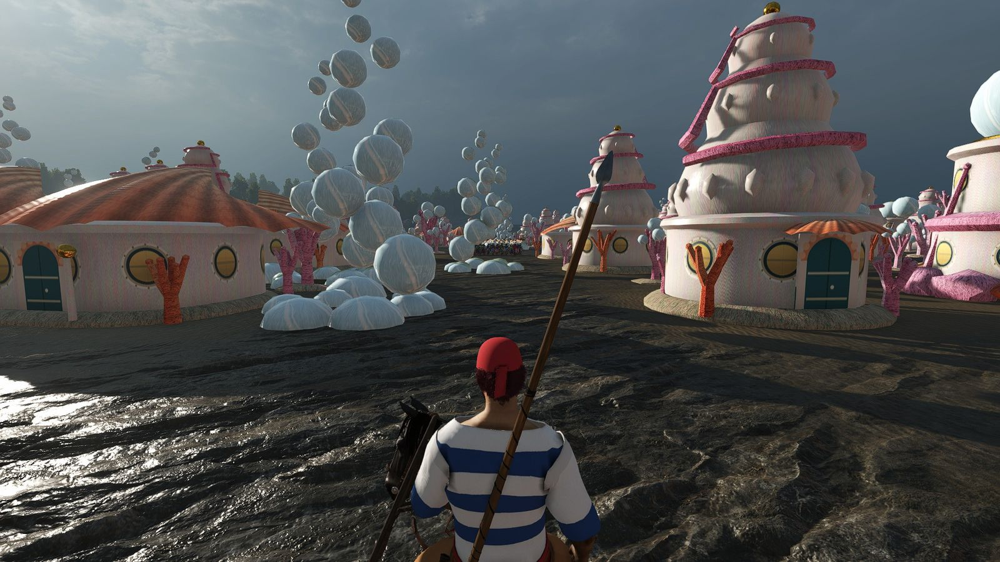

El modThe mod
Qué hay dentroWhat's inside
Todo el mapa es nuevo y la historia va después de Wano, Egghead y el comienzo de Elbaph.
The whole map is new, and the story is set after Wano, Egghead and the start of the Elbaph arc.

Frutas del Diablo y HakiDevil Fruits and Haki
Casi 100 frutas con sus efectos, los tres tipos de Haki y kairoseki. Despierta tu fruta desde el nivel 25. Y si caes al mar con una fruta en el cuerpo, te hundes.
Nearly 100 fruits with their own effects, the three kinds of Haki and seastone. Awaken your fruit from level 25. And if you fall into the sea with a fruit in you, you sink.
Batallas navalesNaval battles
Sobre War Sails, con reglas de One Piece: gyojin en su elemento, fuego de frutas en las cubiertas y el tiempo de cada mar.
Built on War Sails with One Piece rules: fish-men in their element, fruit fire on the decks and each sea's weather.
~200 personajes canon~200 canon characters
Con su cara, su ropa, su fruta, su Haki y su cartel. Las tripulaciones navegan juntas.
With their own faces, clothes, fruits, Haki and bounties. Crews sail together.
Tu cartel de SE BUSCAYour WANTED poster
Sube con lo que haces y la Marina te pone apodo. Desde 30 millones, vienen a por ti.
It grows with what you do, and the Marines give you an epithet. From 30 million on, they come after you.
Estilos de luchaFighting styles
Rokushiki, Santoryu, Pierna Negra, kárate gyojin, Okama Kenpo o Ryusoken, en su escuela.
Rokushiki, Santoryu, Black Leg, Fish-Man Karate, Okama Kenpo or Ryusoken, at their schools.
NakamasNakama
Rayleigh, Vivi, Zeff, Kureha y más esperan en las tabernas. Lazos de tripulación, banquetes y sakazuki.
Rayleigh, Vivi, Zeff, Kureha and more wait in taverns. Crew bonds, feasts and sakazuki.
Una historia que seguirA story to follow
Los Road Poneglyphs hasta Laugh Tale, misiones de personajes canon, Buster Calls, la Reverie, la Guerra de la Cumbre y un periódico.
The Road Poneglyphs to Laugh Tale, quests from canon characters, Buster Calls, the Reverie, the Summit War and a newspaper.
Tu origen y tu familiaYour origin and family
Orígenes de One Piece al crear el personaje. Puedes nacer en la familia de Garp, de Barbablanca, de Big Mom, de los Kozuki o entre los gigantes.
One Piece origins in the character creator. Be born into Garp's, Whitebeard's or Big Mom's family, the Kozuki clan or among the giants.